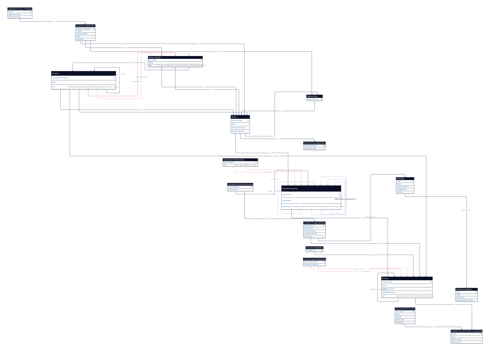

1 · Entities (18 objects)
Each entity with why it's used. The pink field is the entity's primary key.
| # | Entity | Why it's used | Key fields | Subtypes |
|---|---|---|---|---|
| 1 | Quote | The proposed prices / offer presented to the customer before binding. | Quote Number, Status, Effective Start/End Date | — |
| 2 | Quoted Insurance (quote line item) | One thing being quoted on a quote — a coverage, a vehicle, a driver, a policy line. | Quote Line Id, Quoted Rate | Quoted Coverage; Quoted Insured Item → Quoted Vehicle/Other; Quoted Insured Party → Quoted Driver/Other; Quoted Policy; Other Quote Item |
| 3 | Quote Item Relationship | Links quoted line items to each other — which quoted driver drives which quoted vehicle. | Relationship Id | Quoted Vehicle Driver Relation; Other Quoted Item Relationship |
| 4 | Quote Pricing Adjustment | A discount or loading applied during quoting. | Adjustment Name, Adjustment Type | — |
| 5 | Insurance Application | The formal application submitted to get insurance. | Application Number, Content, Submitted Date, Status, Language | — |
| 6 | Application Form / Template | The reusable form an application is built from. | Name, Application Type, Omniscript Name | — |
| 7 | Opportunity | The sales opportunity the quote is working. | Opportunity Id | — |
| 8 | Product | The product being quoted; carries eligibility + rating. | Product Code, Name, Eligibility Criteria, Standard Premium, Approved By/Date | Insurance Product (Effective dates, LoB, Sub Type); Spec → Coverage / Insured Item / Insured Party / Rating Fact |
| 9 | Product Availability | When / where a product is available to quote. | Availability Id | — |
| 10 | Product Spec Relationship | Links a product to its child products / specs (bundles, optional add-ons). | Spec Relationship Id, Included or Optional | — |
| 11 | Product or Spec Attribute | Assigns a rating attribute to a product / spec (the rating inputs / outputs). | Assignment Id, Default Value, Value Data Type, Is Rating Attribute, Rating Use, Rule | — |
| 12 | Attribute of Quoted Insurance | The actual attribute values chosen on a quote line. | Quoted Value Id, Quoted Value | — |
| 13 | Attribute | The definition of a configurable / rating attribute. | Code, Name, Display Sequence, Configurable?, Is Active? | — |
| 14 | Attribute Category | Groups attributes. | Code, Name, Description, Applicable Object Types | — |
| 15 | Tax and Fee (Price List) | The taxes & fees that can apply. | Price List Id, Type, Amount, Rating Type, Refundable | — |
| 16 | Product Tax and Fee (Price List Entry) | A specific tax / fee tied to a product. | Name, Type, Effective From/Until | — |
| 17 | Account | The customer being quoted, plus partner orgs. | Account/Client Number, Name | Client → Business/Consumer/Other; Partner (Internal Org) → Agency/Brokerage, Carrier/Writing Company, Other Partner |
| 18 | Party / Person | The people & orgs involved — producer, underwriter, customer contact. | Contact Id, Name | Person → Producer or Underwriter (User/Non-User), Customer Contact; Company/Org; Other Party |
2 · Relationships (33 relationships)
A 1:N B = one A, many B. The Relationship column is the verb (the named edge): read it as From · relationship · To. M:N rows (pink) are junctions. Source tag shows how each cardinality was verified.
| # | From | Relationship | Card. | To | What it means |
|---|---|---|---|---|---|
| 1 | Quote | made up of | 1:N | Quoted Insurance | quote is built from its line items PDF |
| 2 | Quoted Insurance | an example of | N:1 | Product | each line is an instance of a product STD |
| 3 | Account | the customer on | 1:N | Quote | the quote is prepared for this customer STD |
| 4 | Person (Producer) | producer of | 1:N | Quote | the producer who sold the quote STD |
| 5 | Person (Underwriter) | underwriter of | 1:N | Quote | the underwriter assigned to the quote STD |
| 6 | Opportunity | source of | 1:N | Quote | the quote works a sales opportunity STD |
| 7 | Insurance Application | application for | N:1 | Quote | the application the quote was accepted via STD |
| 8 | Application Form / Template | template for | 1:N | Insurance Application | the form / template an application is built from STD |
| 9 | Insurance Application | applicant on | N:1 | Party / Person | the party / person applying STD (refined) |
| 10 | Insurance Application | submission for | N:1 | Opportunity | the application is a submission for the opportunity STD |
| 11 | Quote Item Relationship | links | M:N | Quoted Insurance ↔ Quoted Insurance | links quoted items to each other (vehicle ↔ driver) PDF |
| 12 | Quote | adjusted by | 1:N | Quote Pricing Adjustment | discount / loading applied to the quote PDF (corrected) |
| 13 | Product | made up of | 1:N | Spec (Coverage / Item / Party / Rating Fact) | a product is built from its specs PDF |
| 14 | Product Spec Relationship | bundles | M:N | Product ↔ Product / Spec | product bundles / child specs PDF |
| 15 | Product Availability | availability of | N:1 | Product | availability windows of a product STD |
| 16 | Product or Spec Attribute | rating attribute of | N:1 | Product | assigns a rating attribute to a product / spec PDF |
| 17 | Product or Spec Attribute | defined by | N:1 | Attribute | the attribute definition it is based on STD |
| 18 | Attribute | grouped in | N:1 | Attribute Category | attributes grouped into categories STD |
| 19 | Attribute of Quoted Insurance | value on | N:1 | Quoted Insurance | attribute values captured on a quote line STD |
| 20 | Attribute of Quoted Insurance | described by | N:1 | Product or Spec Attribute | based on the product-attribute definition STD |
| 21 | Tax and Fee (Price List) | parent of | 1:N | Product Tax and Fee (Price List Entry) | a fee entry belongs to a price list PDF |
| 22 | Product | fees of | 1:N | Product Tax and Fee (Price List Entry) | taxes / fees associated with a product PDF |
| 23 | Carrier / Writing Company (Partner Account) | provider of | 1:N | Product | the carrier that provides the product STD |
| 24 | Agency / Brokerage (Partner Account) | seller of | 1:N | Quote | the brokerage that sells the quote STD |
| 25 | Account (Client) | represented by | 1:1 | Person | B2C identity — a client account is one person STD |
| 26 | Person | contact for | N:1 | Account | a contact for the account STD |
| 27 | Account | considered as | M:N | Party | an account is also a party STD |
| 28 | Account | parent of | 1:N (self) | Account | account / partner-org hierarchy STD (added) |
| 29 | Quoted Coverage | covers | N:1 | Quoted Insured Item | a coverage covers an insured item Q-LINE |
| 30 | Quoted Coverage | names | N:1 | Quoted Insured Party | a coverage names an insured party Q-LINE |
| 31 | Quoted Vehicle | primarily used by | N:1 | Quoted Driver | vehicle primarily used by a driver (also via #11) Q-LINE |
| 32 | Quoted Insurance (lines) | covered under | N:1 | Quoted Policy | a line is covered under a quoted policy Q-LINE |
| 33 | Quote | for | N:1 | Opportunity | the quote belongs to an opportunity STD |
Validation notes
- Cardinalities are source-verified, not eyeballed. PDF = master-detail / many-to-many stated verbatim in the Vlocity object list (e.g. Quote Pricing Adjustment is "Master-detail child object of Quote"; Quote Item Relationship "tracks many-to-many relationships between quote line items"). STD = standard Salesforce lookup. Q-LINE = relationships among record-types of the single
QuoteLineItemobject. - M:N junctions (3, pink): Quote Item Relationship (#11), Product Spec Relationship (#14), Account ↔ Party (#27). 1:1: Account ↔ Person (#25). Self-hierarchy: Account (#28).
- Corrections from the rigorous pass: #12 Quote Pricing Adjustment is master-detail to Quote (not the line item); #9 applicant refined to Party/Person; Account self-hierarchy (#28) added; the earlier "Product applied for via" and "Price List self-loop" flags were resolved as duplicates of #2 and #21 respectively.
Source: Salesforce “Insurance Quoting and Applications” ERD (Sept 2020) + Vlocity Insurance & Financial Services Object List (cardinality verification). Faithful source model — Qubru mapping is a separate step.
3 · Diagram (rendered from D2 — 18 entities · 33 relationships)
Code-based diagram (D2) of the exact same model in the tables above. Source: 2026-06-14-quoting-applications.d2 · pink-dashed = M:N junction objects (#11, #14, #27) · purple-dashed = Q-LINE record-type relationships, drawn as self-loops on Quoted Insurance (#29–32). Quote is the hub.
